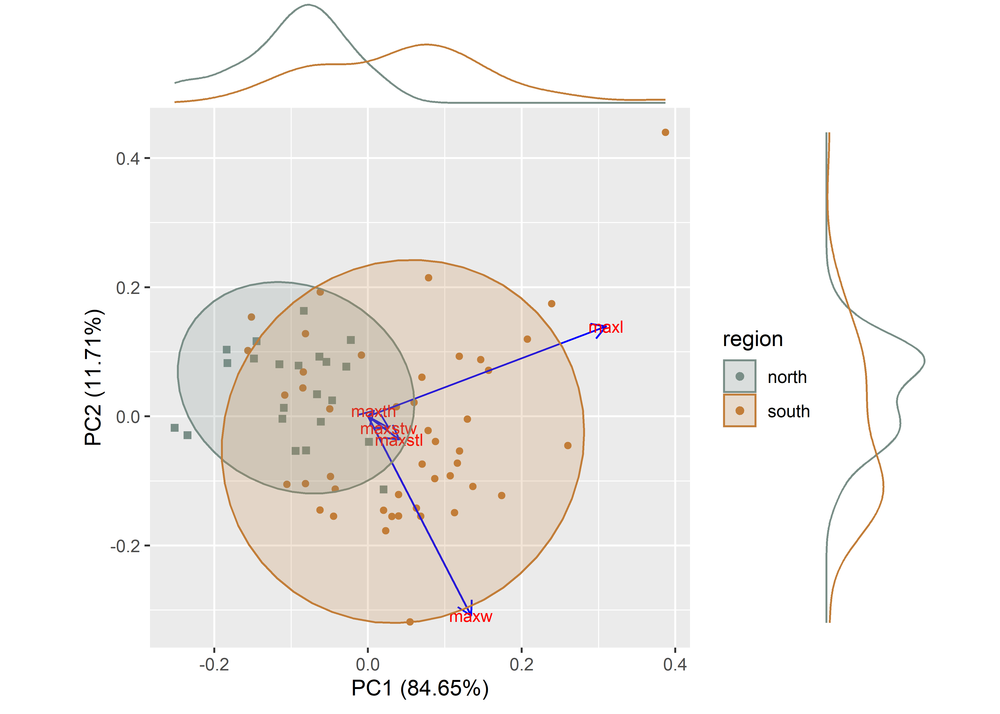

Chapter 1 Linear morphometrics
# install required analysis packages
#devtools::install_github("tidyverse/tidyverse")
#devtools::install_github("mlcollyer/RRPP")
#devtools::install_github("kassambara/ggpubr")
#devtools::install_github("sinhrks/ggfortify")
#devtools::install_github("daattali/ggExtra")
# load libraries
library(here)## here() starts at E:/github/selden.chapterlibrary(tidyverse)## -- Attaching packages ---------------------------------------------------------------------------------------- tidyverse 1.3.1 --## v ggplot2 3.3.5 v purrr 0.3.4
## v tibble 3.1.4 v dplyr 1.0.7
## v tidyr 1.1.3 v stringr 1.4.0
## v readr 2.0.1 v forcats 0.5.1## -- Conflicts ------------------------------------------------------------------------------------------- tidyverse_conflicts() --
## x dplyr::filter() masks stats::filter()
## x dplyr::lag() masks stats::lag()library(RRPP)
library(ggpubr)
library(ggfortify)
library(cluster)
library(wesanderson)
library(ggExtra)1.1 Read data and define variables
# read data
data <- read.csv("qdata.csv", header = TRUE, as.is=TRUE)
# define variables
maxl <- data$maxl # maximum length
maxw <- data$maxw # maximum width
maxth <- data$maxth # maximum thickness
maxstl <- data$maxstl # maximum stem length
maxstw <- data$maxstw # maximum stem width
reg <- data$region # region1.2 Boxplots for variable by raw material
# boxplot of maximum length ~ region
regionmaxl <- ggplot(data, aes(x = region, y = maxl, color = region)) +
geom_boxplot(notch = TRUE) +
geom_dotplot(binaxis = 'y',stackdir = 'center',dotsize = 0.3) +
scale_colour_manual(values = wes_palette("Moonrise2")) +
theme(legend.position = "none") +
labs(x = 'Community', y = 'MaxL')
# boxplot of maximum width ~ region
regionmaxw <- ggplot(data, aes(x = region, y = maxw, color = region)) +
geom_boxplot(notch = TRUE) +
geom_dotplot(binaxis = 'y',stackdir = 'center',dotsize = 0.3) +
scale_colour_manual(values = wes_palette("Moonrise2")) +
theme(legend.position = "none") +
labs(x = 'Community', y = 'MaxW')
# boxplot of maximum thickness ~ region
regionmaxth <- ggplot(data, aes(x = region, y = maxth, color = region)) +
geom_boxplot(notch = TRUE) +
geom_dotplot(binaxis = 'y',stackdir = 'center',dotsize = 0.3) +
scale_colour_manual(values = wes_palette("Moonrise2")) +
theme(legend.position = "none") +
labs(x = 'Community', y = 'MaxTh')
# boxplot of stem length ~ region
regionmaxstl <- ggplot(data, aes(x = region, y = maxstl, color = region)) +
geom_boxplot(notch = TRUE) +
geom_dotplot(binaxis = 'y',stackdir = 'center',dotsize = 0.3) +
scale_colour_manual(values = wes_palette("Moonrise2")) +
theme(legend.position = "none") +
labs(x = 'Community', y = 'StemL')
# boxplot of stem width ~ region
regionmaxstw <- ggplot(data, aes(x = region, y = maxstw, color = region)) +
geom_boxplot(notch = TRUE) +
geom_dotplot(binaxis = 'y', stackdir = 'center', dotsize = 0.3) +
scale_colour_manual(values = wes_palette("Moonrise2")) +
theme(legend.position = "none") +
labs(x = 'Community', y = 'StemW')
# render figure
regionfigure <- ggarrange(regionmaxl, regionmaxw, regionmaxth, regionmaxstl, regionmaxstw,
labels = c("a","b","c","d","e"),
ncol = 2, nrow = 3)## Bin width defaults to 1/30 of the range of the data. Pick better value with `binwidth`.
## Bin width defaults to 1/30 of the range of the data. Pick better value with `binwidth`.
## Bin width defaults to 1/30 of the range of the data. Pick better value with `binwidth`.
## Bin width defaults to 1/30 of the range of the data. Pick better value with `binwidth`.
## Bin width defaults to 1/30 of the range of the data. Pick better value with `binwidth`.## plot figure
regionfigure
Figure 1.1: Boxplots for maximum length, width, thickness, stem length, and stem width for Perdiz arrow points.
1.3 Principal Components Analysis
# attributes for plot
df<-data[c(4:8)]
pch.gps.gp <- c(15,16)[as.factor(reg)]
col.gps.gp <- wes_palette("Moonrise2")[as.factor(reg)]
## pca plot
pca <- autoplot(prcomp(df),
data = data,
asp = 1,
shape = pch.gps.gp,
colour = "region",
variance_percentage = TRUE,
loadings = TRUE,
loadings.colour = 'blue',
loadings.label = TRUE,
loadings.label.size = 3,
frame = TRUE,
frame.type = 't') +
scale_fill_manual(values = wes_palette("Moonrise2")) +
scale_colour_manual(values = wes_palette("Moonrise2"))
ggMarginal(pca, groupColour = TRUE)

Figure 1.2: Principal components analysis by raw material.
1.4 Analyses of Variance (ANOVA) for variable ~ region
1.4.1 Maximum length of Perdiz arrow points
# anova = maximum length ~ region
regionml <- lm.rrpp(maxl ~ region,
SS.type = "I",
data = data, iter = 9999,
print.progress = FALSE)
anova(regionml)##
## Analysis of Variance, using Residual Randomization
## Permutation procedure: Randomization of null model residuals
## Number of permutations: 10000
## Estimation method: Ordinary Least Squares
## Sums of Squares and Cross-products: Type I
## Effect sizes (Z) based on F distributions
##
## Df SS MS Rsq F Z Pr(>F)
## region 1 527.63 527.63 0.27003 24.045 3.5261 1e-04 ***
## Residuals 65 1426.36 21.94 0.72997
## Total 66 1953.99
## ---
## Signif. codes: 0 '***' 0.001 '**' 0.01 '*' 0.05 '.' 0.1 ' ' 1
##
## Call: lm.rrpp(f1 = maxl ~ region, iter = 9999, SS.type = "I", data = data, print.progress = FALSE)1.4.2 Maximum width of Perdiz arrow points
# anova = maximum width ~ region
regionmw <- lm.rrpp(maxw ~ region,
SS.type = "I",
data = data,
iter = 9999,
print.progress = FALSE)
anova(regionmw)##
## Analysis of Variance, using Residual Randomization
## Permutation procedure: Randomization of null model residuals
## Number of permutations: 10000
## Estimation method: Ordinary Least Squares
## Sums of Squares and Cross-products: Type I
## Effect sizes (Z) based on F distributions
##
## Df SS MS Rsq F Z Pr(>F)
## region 1 202.15 202.15 0.32669 31.538 3.8965 1e-04 ***
## Residuals 65 416.63 6.41 0.67331
## Total 66 618.78
## ---
## Signif. codes: 0 '***' 0.001 '**' 0.01 '*' 0.05 '.' 0.1 ' ' 1
##
## Call: lm.rrpp(f1 = maxw ~ region, iter = 9999, SS.type = "I", data = data, print.progress = FALSE)1.4.3 Maximum thickness of Perdiz arrow points
# anova = maximum thickness ~ region
regionmth <- lm.rrpp(maxth ~ region,
SS.type = "I",
data = data,
iter = 9999,
print.progress = FALSE)
anova(regionmth)##
## Analysis of Variance, using Residual Randomization
## Permutation procedure: Randomization of null model residuals
## Number of permutations: 10000
## Estimation method: Ordinary Least Squares
## Sums of Squares and Cross-products: Type I
## Effect sizes (Z) based on F distributions
##
## Df SS MS Rsq F Z Pr(>F)
## region 1 0.0477 0.047668 0.00274 0.1785 -0.46663 0.678
## Residuals 65 17.3577 0.267041 0.99726
## Total 66 17.4054
##
## Call: lm.rrpp(f1 = maxth ~ region, iter = 9999, SS.type = "I", data = data, print.progress = FALSE)1.4.4 Maximum stem length of Perdiz arrow points
# anova = maximum stem length ~ region
regionmstl <- lm.rrpp(maxstl ~ region,
SS.type = "I",
data = data,
iter = 9999,
print.progress = FALSE)
anova(regionmstl)##
## Analysis of Variance, using Residual Randomization
## Permutation procedure: Randomization of null model residuals
## Number of permutations: 10000
## Estimation method: Ordinary Least Squares
## Sums of Squares and Cross-products: Type I
## Effect sizes (Z) based on F distributions
##
## Df SS MS Rsq F Z Pr(>F)
## region 1 7.874 7.874 0.08102 5.7305 1.9475 0.018 *
## Residuals 65 89.313 1.374 0.91898
## Total 66 97.187
## ---
## Signif. codes: 0 '***' 0.001 '**' 0.01 '*' 0.05 '.' 0.1 ' ' 1
##
## Call: lm.rrpp(f1 = maxstl ~ region, iter = 9999, SS.type = "I", data = data, print.progress = FALSE)1.4.5 Maximum stem width of Perdiz arrow points
# anova = maximum stem width ~ region
regionmstw <- lm.rrpp(maxstw ~ region,
SS.type = "I",
data = data,
iter = 9999,
print.progress = FALSE)
anova(regionmstw)##
## Analysis of Variance, using Residual Randomization
## Permutation procedure: Randomization of null model residuals
## Number of permutations: 10000
## Estimation method: Ordinary Least Squares
## Sums of Squares and Cross-products: Type I
## Effect sizes (Z) based on F distributions
##
## Df SS MS Rsq F Z Pr(>F)
## region 1 12.353 12.3532 0.35368 35.57 4.0646 1e-04 ***
## Residuals 65 22.574 0.3473 0.64632
## Total 66 34.927
## ---
## Signif. codes: 0 '***' 0.001 '**' 0.01 '*' 0.05 '.' 0.1 ' ' 1
##
## Call: lm.rrpp(f1 = maxstw ~ region, iter = 9999, SS.type = "I", data = data, print.progress = FALSE)